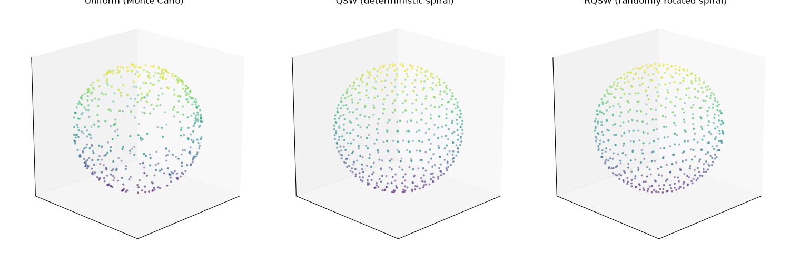
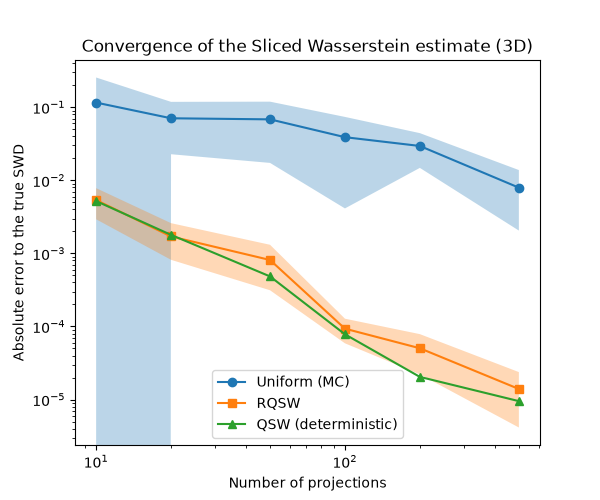

Note
Go to the end to download the full example code.
Quasi-Monte Carlo Sliced Wasserstein in 3D
This example illustrates the Quasi-Sliced Wasserstein (QSW) and Randomized Quasi-Sliced Wasserstein (RQSW) sampling schemes introduced in [95], and compares them to the default uniform (Monte Carlo) sampling of slicing directions.
Sliced Wasserstein (SWD) approximates the Wasserstein distance by averaging 1D Wasserstein distances over projections onto random directions \(\theta\) drawn uniformly on the sphere. By default these directions are sampled purely at random (Monte Carlo), which introduces some variance in the estimate for a given number of projections.
QSW replaces the random directions with a deterministic, low-discrepancy point set on the sphere (generalized spiral points), which covers the sphere more evenly than random sampling and reduces the approximation error, especially in 3D. Since QSW is deterministic it cannot directly be used as an unbiased estimator in stochastic settings (e.g. gradient-based optimization) – RQSW addresses this by applying a random rotation to the same point set, which preserves both its low discrepancy and its unbiasedness.
We first visualize the three sampling schemes on the sphere, then measure how fast each one converges to the true Sliced Wasserstein distance between two point clouds – known here in closed form, with no approximation error left except from the number of projections itself.
# Author: Samuel Vangu <samuelvangu0@gmail.com>
#
# License: MIT License
# sphinx_gallery_thumbnail_number = 1
import numpy as np
import matplotlib.pylab as pl
from mpl_toolkits.mplot3d import Axes3D # noqa: F401 (registers the 3D projection)
import ot
from ot.sliced import get_random_projections, get_projections_spiral
Visualize the three sampling schemes on the sphere
We draw a few hundred directions on \(S^2\) with each scheme:
uniform: directions are Gaussian vectors normalized to unit norm (standard Monte Carlo sampling of the sphere).spiral_qmc: deterministic generalized spiral points – a simple, closed-form low-discrepancy point set (Rakhmanov, Saff & Zhou, 1994) [96]. The same call always returns the same points.randomized_spiral_qmc: the same spiral point set, rotated by a random (3, 3) rotation matrix (drawn via QR decomposition of a Gaussian matrix). The rotation makes the estimator unbiased while keeping the points as evenly spread out as the deterministic spiral set.
n_projections = 500
d = 3
seed = 42
theta_uniform = get_random_projections(d, n_projections, seed=seed)
theta_qsw = get_projections_spiral(d, n_projections, randomized=False)
theta_rqsw = get_projections_spiral(d, n_projections, randomized=True, seed=seed)
fig = pl.figure(1, figsize=(15, 5))
schemes = [
(theta_uniform, "Uniform (Monte Carlo)"),
(theta_qsw, "QSW (deterministic spiral)"),
(theta_rqsw, "RQSW (randomly rotated spiral)"),
]
for i, (theta, title) in enumerate(schemes):
ax = fig.add_subplot(1, 3, i + 1, projection="3d")
ax.scatter(theta[0], theta[1], theta[2], c=theta[2], cmap="viridis", s=4, alpha=0.8)
ax.set_title(title)
ax.set_box_aspect([1, 1, 1])
ax.view_init(elev=20, azim=45)
ax.set_xticks([])
ax.set_yticks([])
ax.set_zticks([])
pl.tight_layout()
pl.show()
# Notice how the uniform sample leaves visible gaps and clusters, while QSW
# and RQSW spread the points much more evenly over the sphere -- this is
# exactly the low-discrepancy property that reduces the error of the Sliced
# Wasserstein estimate.

Convergence to the true Sliced Wasserstein distance
We now compare how fast each sampling scheme converges to the true
SWD as the number of projections grows. To get a reference value with
zero approximation error – not even from a finite number of
samples – we build Xt as a pure translation of Xs by a fixed
vector \(\delta\): Xt = Xs + delta.
For a rigid translation, the classical 1D Wasserstein identity \(W_2(\mu, \mu + c) = |c|\) holds exactly, for any distribution shape and any (even very small) sample size – no law-of-large-numbers argument, no Gaussian assumption, just an algebraic identity of optimal transport on the line. Projected onto any direction \(\theta\), this gives \(W_2(\theta_\# \mu, \theta_\# \nu) = |\theta^T \delta|\) exactly, and averaging the square over \(\theta\) uniform on \(S^{d-1}\) gives the closed-form identity
Because this holds regardless of Xs’s shape or size, the only
remaining source of error in the experiment below is the number of
projections – exactly the quantity we want to study.
rng = np.random.RandomState(0)
n_samples = 200
delta = np.array([1.5, 1.0, -0.5])
Xs = rng.uniform(-2, 2, (n_samples, d))
Xt = Xs + delta
# Exact reference: no approximation at all, at any cost.
sw_true = np.linalg.norm(delta) / np.sqrt(d)
n_proj_list = [10, 20, 50, 100, 200, 500]
n_trials = 8
errors_uniform = np.zeros((n_trials, len(n_proj_list)))
errors_rqsw = np.zeros((n_trials, len(n_proj_list)))
errors_qsw = np.zeros(len(n_proj_list))
for j, n_proj in enumerate(n_proj_list):
for t in range(n_trials):
sw_uniform = ot.sliced_wasserstein_distance(
Xs, Xt, n_projections=n_proj, sampling_slices="uniform", seed=t
)
sw_rqsw = ot.sliced_wasserstein_distance(
Xs,
Xt,
n_projections=n_proj,
sampling_slices="randomized_spiral_qmc",
seed=t,
)
errors_uniform[t, j] = np.abs(sw_uniform - sw_true)
errors_rqsw[t, j] = np.abs(sw_rqsw - sw_true)
sw_qsw = ot.sliced_wasserstein_distance(
Xs, Xt, n_projections=n_proj, sampling_slices="spiral_qmc"
)
errors_qsw[j] = np.abs(sw_qsw - sw_true)
mean_err_uniform = errors_uniform.mean(axis=0)
std_err_uniform = errors_uniform.std(axis=0)
mean_err_rqsw = errors_rqsw.mean(axis=0)
std_err_rqsw = errors_rqsw.std(axis=0)
pl.figure(2, figsize=(6, 5))
pl.plot(n_proj_list, mean_err_uniform, "o-", label="Uniform (MC)")
pl.fill_between(
n_proj_list,
mean_err_uniform - std_err_uniform,
mean_err_uniform + std_err_uniform,
alpha=0.3,
)
pl.plot(n_proj_list, mean_err_rqsw, "s-", label="RQSW")
pl.fill_between(
n_proj_list,
mean_err_rqsw - std_err_rqsw,
mean_err_rqsw + std_err_rqsw,
alpha=0.3,
)
pl.plot(n_proj_list, errors_qsw, "^-", label="QSW (deterministic)")
pl.xscale("log")
pl.yscale("log")
pl.xlabel("Number of projections")
pl.ylabel("Absolute error to the true SWD")
pl.title("Convergence of the Sliced Wasserstein estimate (3D)")
pl.legend()
pl.show()
# QSW and RQSW reach a given accuracy with fewer projections than uniform
# sampling, and RQSW keeps the estimator unbiased -- so it is a drop-in
# replacement for uniform sampling in stochastic optimization settings
# (e.g. Sliced Wasserstein gradient flows) where a deterministic QSW
# estimate would not be appropriate.

Total running time of the script: (0 minutes 1.267 seconds)